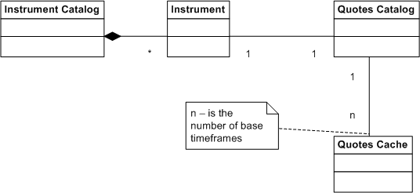

How does Quotes Manager Work (Business Logic)?
Brief
The article describes the basic concepts of how Quotes Manager interprets the data.
Details
The Quotes Manager API uses two important things to access historical prices as efficiently as possible:
The prices are downloaded to the client computer using a very fast and effective protocol.
The prices are kept in the cache on the client side, so any price is loaded only once.
In order to reach the proper balance between performance and local storage usage, the Quotes Manager API downloads only a limited set of timeframes (called base timeframes) and uses them to build any data requested on the fly.
The client application can get data only from the cache. The process of getting the data consists of three steps:
First, the application must check whether the information about the instrument historical prices is available locally, and, if not, the application must update it. The information about this instrument is called quotes catalog.
Then, the application must download all data into the cache in any of the date required that is not in the cache yet. This operation is called prepare quotes.
And, finally, the application can receive the quotes from the cache.
See the business domain model diagram below:
